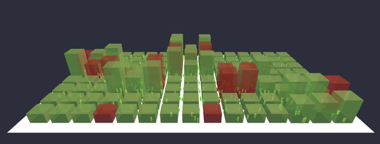
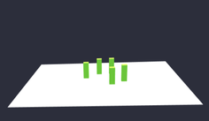
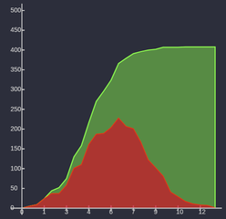
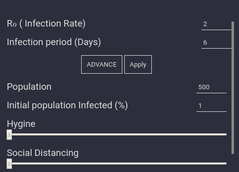
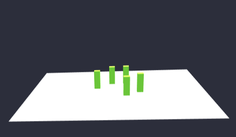
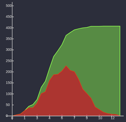
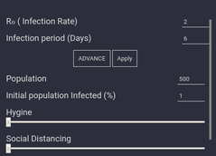

The map is 15*8 grid divided into 2 sections which has two types of model of structure with the smaller one being the houses of the citizens and the taller ones being the public places.
It has been arranged in a fashion so that it resembles a bustling part of a city. With the passing of time the residental and public places will change color indicating the spread of the virus
There are two types of maps in this simulation:
The 1st map having 84 houses and 36 public to simulate a normal day and the 2nd map having 72 houses and 9 public places where citizen can visit each place once a day, to simulate the fact if there is a lockdown the citizens
can only visit a singe place like grocery stores and other goods of daily needs

In this simulation two types of structures are used both are cuboids in shape but differs in sizes the smaller one being the residental place where the general populace will stay at the end of the day,
and the bigger ones being the public places the populace will visit throughout the day.
These structures will change thier colors acording to the spread of the virus as:-
Green-susceptible Red-infected
 The general citizens are in a shape of a cuboid and they are constantly traversing from one part of the map to the other going on about their own business.They will frequent to public places
each day and then return to their respective house.
The color of these citizens describes their current condition with the spreading virus
Green-susceptible Red-infected blue-Immune
This cycle of infecting others will continue until no is infected or every has recovered

The filter option is given so as to manually set particular scenarios on how the spread of virus will affect the simulation. These certain options are:-
#R0(infection rate):through this the rate of virus spreading can be adjusted.
#Infection eriod:The amount of time the citizens will remain infected
Advance filter settings is also implemented for further assistance with options like hygene, social distancing, and the rate the citizens frequent outside their houses.


The general citizens are in a shape of a cuboid and they are constantly traversing from one part of the map to the other going on about their own business.They will frequent to public places
each day and then return to their respective house.
The color of these citizens describes their current condition with the spreading virus
Green-susceptible Red-infected blue-Immune
This cycle of infecting others will continue until no is infected or every has recovered

The filter option is given so as to manually set particular scenarios on how the spread of virus will affect the simulation. These certain options are:-
#R0(infection rate):through this the rate of virus spreading can be adjusted.
#Infection eriod:The amount of time the citizens will remain infected
Advance filter settings is also implemented for further assistance with options like hygene, social distancing, and the rate the citizens frequent outside their houses.

